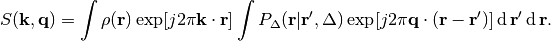
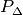

These notes are to help the user of the dipy module understand Frank Yeh’s Generalised Q-Sampling Imaging (GQI) [reference?].
The starting point is the classical formulation of joint k-space and q-space imaging (Calaghan 8.3.1 p. 438) using the narrow pulse gradient spin echo (PGSE) sequence of Tanner and Stejskal:

Here  is the (complex) RF signal measured at spatial wave number
is the (complex) RF signal measured at spatial wave number  and magnetic gradient wave number
and magnetic gradient wave number  .
.
 is the local spin density (number of protons per unit volume
contributing to the RF signal).
is the local spin density (number of protons per unit volume
contributing to the RF signal).
 is the diffusion time scale of the sequence.
is the diffusion time scale of the sequence.
 is the averages diffusion propagator (transition probability distribution).